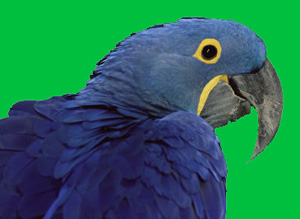
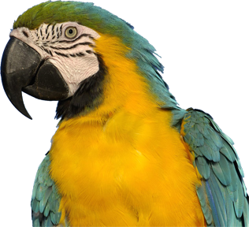
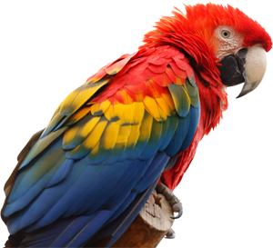

I like animals, especially birds. One of my favourite parrot species is the macaw. The largest one of all is the Hyacinth Macaw (Anodorhynchus hyacinthinus), also known as the Hyacinthine Macaw, which is mainly blue (top).  However, many macaw species are colourful. Some species are known for their impressive size. These creatures are native to certain parts of Latin America (Central and South America). There are six different parrots in the Psittacidae genera classified as macaws: Ara, Anodorhynchus, Cyanopsitta, Primolius, Orthopsittaca, and Diopsittaca.
I really admire the Blue-and-Yellow Macaw (Ara ararauna), also known as the Blue-and-Gold Macaw, which is one of the most beautiful animals in the world (left). The Blue-and-Gold Macaw is native to Paname in Central America, and the tropical South America from Trinidad and Venezuela south to Peru, Brazil, Bolivia, and Paraguay.  I also like the Scarlet Macaw (Ara macao), which is one of the most colorful macaws (red-yellow-green-blue, see the picture on the right). The Scarlet Macaw is native to the Central and South American tropics, including south-eastern Mexico, and the rainforests of Peru, Bolivia and Brazil.